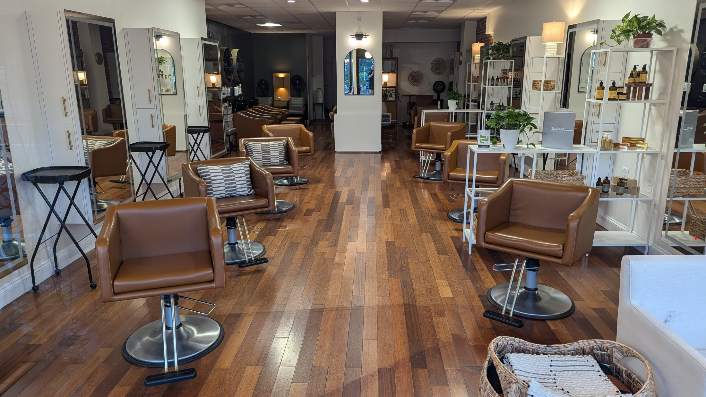
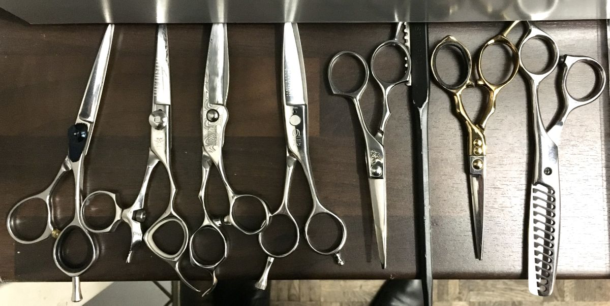

Sede Las Tinajas
Las Tinajas 1504, Maipú
Sector Tres Poniente
- Lunes a miércoles
- 09:00 – 19:00
- Jueves y viernes
- 09:00 – 20:00
- Sábado
- 09:00 – 18:00
- Domingo
- cerrado
Propuesta de sitio web — preparada para Estética & Peluquería Maipú Jacqueline por CristalWeb
520 reseñas con 4,9 —de lo mejor evaluado de Maipú— y la única página que tienen es una ficha de AgendaPro con un número al final. La agenda funciona; lo que falta es la marca: un lugar propio donde esa reputación aterrice.
Estética & Peluquería · dos sedes en Maipú
Peluquería, uñas, pestañas, depilación, podología y limpiezas faciales. Acá se dice cuánto dura cada cosa, para que armes la visita antes de reservar y no te tengan más de la cuenta.
La pieza que ordena la tarde
Marca lo que te quieres hacer. Abajo aparece el tiempo total y el orden que conviene, y el mensaje queda listo para reservar. Los minutos son de referencia: la profesional los confirma al tomar la hora.

Saber a qué hora sales es la diferencia entre una tarde de cuidado y una tarde perdida en la sala de espera.
Servicios
Las seis familias son las que el salón publica en su agenda. Lo que va dentro de cada una es ejemplo hasta que lo confirmen.
Corte, color, mechas, tratamientos y alisados. Diagnóstico del pelo antes de tocar nada.
Lifting, extensiones, laminado y diseño. Sin promesas de «efecto»: se ve en la primera visita.
Con podóloga titulada. Uñas encarnadas, callosidades y pie diabético se evalúan antes de tratar.
Tradicional, permanente y spa. Herramientas esterilizadas y en bolsa sellada, abierta delante tuyo.
Por zona o completa. Se conversa la piel antes: la cera no es para todos los días ni para todas las pieles.
Paso a paso y sin marcas en la cara: evaluación, limpieza, vapor, extracción si corresponde, mascarilla.
Con quién
Una clienta vuelve a una persona, no a un local. Estos son los nombres que la agenda del salón ya publica; la especialidad de cada una y su foto van como ejemplo hasta que ellas lo confirmen.
Peluquería y color
Manicure y pedicure spa
Pestañas y cejas
Depilación y limpiezas faciales
Peluquería
Podóloga
Uñas
Cómo se atiende
Se reserva en la agenda, no por teléfono a ver si hay. Si el turno anterior se alarga, se avisa por WhatsApp antes de que salgas de tu casa. Y si llegas antes, hay dónde esperar sin cruzarte con nadie.
Las dos sedes
Las dos están en Maipú. La agenda muestra las horas de cada una; elige por la que te acomode y no por la que tenga hora antes.
Sede Las Tinajas
Sector Tres Poniente
Sede Manuel Rodríguez
A pasos del centro de Maipú
«Quinientas veinte personas se tomaron el tiempo de escribir cómo las atendieron. Ese es el único aviso que vale.»
El salón
Fotos del rubro, mientras llegan las de las dos sedes.

Dónde están hoy
El trabajo se publica todos los días en Instagram y TikTok. Esta página es el lugar donde todo eso aterriza cuando alguien busca «estética Maipú» sin conocerlas todavía.
Reservar
La agenda en línea es la más rápida: muestra las horas libres de las dos sedes y confirma al instante. WhatsApp sirve para preguntar antes. Y por teléfono, en horario de atención.
El salón acepta cancelar hasta 24 horas antes y modificar la reserva hasta dos veces, según su agenda pública.
Para la dueña
Una propuesta de sitio web hecha por nuestra cuenta. El salón no la encargó ni la ha revisado. Dimos por cierto sólo lo que ya es público: las 520 reseñas con 4,9 en Google, las dos direcciones, el horario de Las Tinajas, los siete nombres y las seis familias de servicio que publica su agenda (27-08-2026).
Las duraciones de cada servicio, las especialidades de cada profesional, el horario de Manuel Rodríguez, las políticas de atraso y lo que incluye cada servicio. Todo va marcado en la página con una línea punteada. No hay precios a propósito.
AgendaPro sigue siendo la agenda: acá no se reemplaza, se integra. Lo que agrega esta página es aparecer en Google con el nombre del salón, contar cuánto dura cada cosa y presentar a las siete personas del equipo. Pesa menos que una foto y no carga nada de terceros.